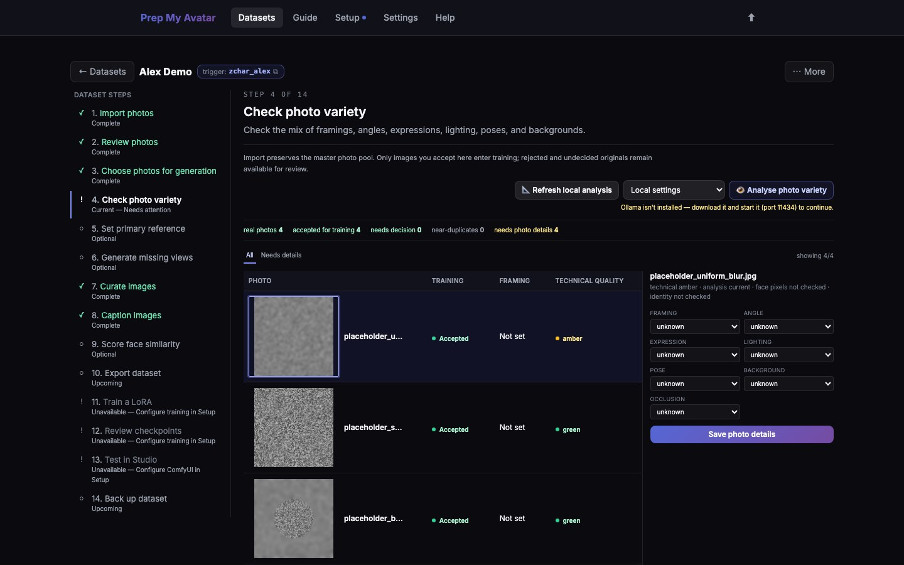

First run · 11 of 21
Step 11: Check photo variety
Coverage describes what evidence your accepted images provide: face, bust, body, and back views, plus useful variation in angle, expression, lighting, pose, and background.
This is a Character-only step. Photo variety means the different views and conditions in your accepted images. Concept and Style datasets go directly from Review photos to Curate images because they do not need this view-by-view check.

Before you begin
Finish describing and accepting the imported photos first. A photo without these details is shown as unknown; unknown does not mean the view is missing.
Do this
- Open Check photo variety in the dataset step navigator. Its URL ends in
/coverage. - Use Analyse photo variety when local vision is available, or describe each accepted photo manually on this page.
- Record framing, angle, expression, lighting, pose, background, and occlusion where the app asks for them.
- Keep Balanced for a normal first run. Strict recommends fewer generated gaps; Experimental allows more.
- Read each framing card. The first number is what you have and the second is the target.
- Expand the other dimensions to see weak, missing, covered, and unknown evidence.
- Adjust a target only when your intended output genuinely needs a different balance.
- Select Save targets after changing the profile or any number.
- Add another real photo whenever practical. Treat generated gap shots as optional supplements, not replacements for unknown imports.
- Select Continue to Set primary reference.
You are finished when
You understand which kinds of photos are missing, every accepted image has its details recorded, and the selected profile is saved. The step navigator marks Check photo variety — Complete. Concept and Style navigators omit this Character-only page.